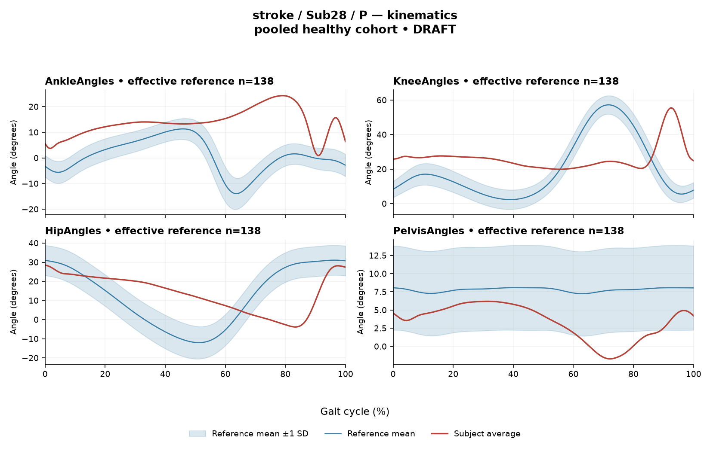

R5E325ED291E84E45
rater2 / 120 of 150 / Case stroke_Sub28_P / Review row 121
Report: verbatim text
Text file for exact quotations# Gait Report Interpretation — Sub28_P **Scope statement:** This is a limited-evidence interpretation of a quantitative research summary. It is not a diagnosis, not an assessment of walking independence or safety, and not a basis for treatment selection. All statements are restricted to the supplied mean-curve metrics, algorithm-detected intervals and the stated reference comparison. --- ## 1. Objective Findings **Participant and side.** Sub28_P is a participant in the stroke cohort; the analysed side is the **paretic** side. The released cycle for this limb runs from initial contact of the paretic limb (0%) to the next initial contact of the same limb (100%). These endpoints are two successive occurrences of the same event, not a single instant. **No intermediate gait event (including toe-off) and no phase boundary is supplied**, so all timing below is expressed purely as a percentage of the analysis cycle. Percentages are not translated into stance, swing, loading response, pre-swing or any other phase, and no conventional 60% stance/swing split is applied. **Spatiotemporal values as supplied.** | Measure | Value | |---|---| | Gait speed | 0.21 m/s (household-ambulator speed band, <0.4 m/s) | | Cadence | 46.8 steps/min | | Step length symmetry index | −62.4% (successive-footfall definition) | | Composite kinematic deviation (GPS-like) | 16.32 | The ambulation label denotes a **speed band only**. It does not represent measured independence, safety, assistive-device use or community mobility, none of which are supplied here. The step length symmetry index is negative, which under the stated formula means the **paretic step is the shorter of the two**, by a large margin on this index. The value applies to the successive-footfall definition; the instantaneous definition can yield a different value for some subjects, and that alternative value is not supplied. **Critical comparability limit (applies to every reference comparison in this report).** The healthy reference cohort's self-selected speeds span 0.80–1.79 m/s. This participant walked at **0.21 m/s, far below that floor**, so **no speed-matched healthy reference exists in this dataset**. Every deviation reported below therefore conflates very-slow-walking effects with any stroke-related control changes, and the two **cannot be separated from these data**. The reference used (138 pooled healthy subjects, 1001 phase points, main_cohort_excel) pools both body sides and all ages and is not matched to this participant. Deviation from this reference does not by itself establish a disease effect, a lesion mechanism, a severity grade or a clinical diagnosis; group membership in the stroke cohort likewise does not tell us which specific findings are stroke-attributable. **Channels available and not supplied.** Sagittal-plane kinematics are provided for ankle, knee, hip and pelvis only; coronal and transverse channels are not part of this input. Seven EMG channels are present (GAS, RF, VL, BF, ST, TA, ERS). Individual toe-off timing, muscle-specific matched normal timing references, stride-level (stride-to-stride) data, raw-signal quality checks and expert plots are **not supplied in this task**; they must not be described as absent from the source dataset. Age, sex, gait events, time post-stroke, clinical stroke scores and non-paretic-side data are outside this input — their status here is "not supplied," which is distinct from "documented absent." --- ## 2. EMG Envelope and Threshold Findings **How these numbers must be read.** All EMG values are properties of an **ensemble-averaged envelope** per muscle, normalized to a participant-, side- and muscle-specific maximum shared across strides before averaging (the paretic-side denominator is not shared with the other side). Consequently: - Amplitudes are **relative envelope values**, not neural drive, force or strength. Muscles must not be ranked as stronger or weaker from these peaks. - Detected intervals are **regions where the averaged envelope exceeds 20% of that same curve's own peak, with a 3%-of-cycle minimum retained duration**. They are not physiological onset, offset, contraction duration, or evidence of continuous contraction; and regions outside them are not established as inactivity. - The mean curve **cannot** show whether the same pattern occurred in every individual stride, and gives no information on stride-to-stride variability. - An onset written as 0% is the analysis-window boundary. Intervals written with X > Y wrap the 100%→0% boundary, i.e. the mean envelope remained above its threshold across the cycle-defining initial-contact boundary. - Timing is **not** characterized as normal, early, delayed or prolonged, because no matched muscle-specific timing reference is supplied. **Per-muscle mean-envelope findings (as reported):** | Muscle | Retained interval(s) (% cycle) | Coverage | Peak norm. amp. | Max \|z\| vs reference (direction, location) | |---|---|---|---|---| | GAS | 22–53; 56–60; 74–89; 97–20 (wraps) | 73% | 0.57 | 21.7 above, at 81% | | RF | 14–17; 28–80; 86–3 (wraps) | 78% | 0.45 | 4.1 below, at 6% | | VL | 93–80 (wraps) | 87% | 0.60 | 6.4 above, at 51% | | BF | 40–64; 76–83; 92–15 (wraps) | 55% | 0.60 | 2.6 above, at 50% | | ST | 77–88; 90–62 (wraps) | 82% | 0.53 | 6.4 above, at 46% | | TA | 32–36; 42–47; 50–53; 60–64; 69–75; 75–78; 87–97; 100–3 (wraps) | 52% | 0.53 | 3.9 below, at 99% | | ERS | 0–100 | 100% | 0.49 | 3.5 above, at 88% | **Descriptive observations at the mean-envelope level.** - **All seven channels** show above-threshold envelope values across the cycle-defining initial-contact boundary, i.e. boundary continuity of the averaged envelope at each muscle. - **ERS** is reported as above threshold for 100% of the cycle with a single 0%–100% interval; on this evidence the averaged ERS envelope did not drop below its own 20%-of-peak threshold anywhere in the analysis window. This is a statement about the mean curve under this threshold rule only, not about tonic contraction, and does not establish the same in every stride. - **VL** has a single wrapping interval (93%–80%) covering 87% of the cycle — one contiguous above-threshold region of the mean envelope rather than discrete bursts. **ST** similarly is dominated by one long wrapping region (90%–62%) plus a separate 77%–88% region, totalling 82%. - **TA** shows the most fragmented pattern: eight retained regions totalling 52% coverage, several of them at or near the 3% minimum retained duration. Fragmentation here is a property of the averaged envelope relative to its own peak under this threshold; note that the individual-stride pattern cannot be recovered from it. - **GAS** shows four retained regions (73% coverage) including one wrapping the boundary. - Coverage values are relative to each curve's **own peak**, so high coverage in one muscle and lower coverage in another do not indicate relative activation magnitude between muscles. - For the muscles with a rounded coverage below 100%, the residual portion of the cycle is simply "not retained as an interval" — which under the rules here does not by itself establish a below-threshold segment, since sub-threshold status and minimum-duration rejection are not distinguished in this summary. **Max |z| interpretation.** Each max |z| is the **largest standardized difference across all 1001 phase points** relative to the reference mean/SD at that phase — an extreme-value statistic, not a single-observation z-score. It locates the biggest standardized discrepancy, **not** the peak envelope amplitude and **not** any gait event. "Above/below reference" means relative to the phase-specific reference mean at that location, not relative to a healthy percentile limit. The conventional 2-SD rule does not apply: in this dataset every one of 109 healthy controls exceeds |z| = 2 on at least one muscle, and per-muscle healthy 95th percentiles for this statistic run 3.65 (ERS) to 4.61 (TA), higher under leave-one-out. Against that backdrop: - **BF (2.6)** and **TA (3.9, below reference at 99%)** sit at or under their respective per-muscle healthy 95th-percentile magnitudes (TA 4.61); these are not distinguishable from values seen in healthy controls on this statistic. - **RF (4.1, below reference)** and **ERS (3.5 above)** are in the same general vicinity as their healthy 95th-percentile magnitudes; ERS's 3.5 is just below the ERS figure of 3.65. - **VL (6.4 above, at 51%)**, **ST (6.4 above, at 46%)** and especially **GAS (21.7 above, at 81%)** exceed the quoted per-muscle healthy 95th-percentile magnitudes substantially. The GAS value is an extreme standardized difference from the pooled reference at 81% of the cycle. Given the speed mismatch described in Section 1, this magnitude documents a large difference from an unmatched reference; it does not by itself establish spasticity, abnormal drive, a pathological pattern or any diagnosis, and it does not localize a physiological event. **Co-contraction indices.** CCI here is the Falconer–Winter index (2 × common area / summed areas) computed on the **full continuous envelopes over the whole cycle**. It is a whole-cycle overlap index of normalized envelopes: it is not simultaneous activation time, not muscle force, and not phase-specific. It can be non-zero even where detected intervals do not overlap, because sub-threshold envelope area contributes. Values depend on this normalization and envelope pipeline and must not be compared with thresholds from other studies or algorithms. - **RF vs BF = 0.68** — exactly at the healthy-cohort median (0.68) and inside the supplied 2.5th–97.5th percentile interval (0.48–0.83). - **TA vs GAS = 0.62** — above the supplied healthy 2.5–97.5 percentile interval (0.24–0.59), whose median is 0.39. Lying within the reference interval does **not** establish physiologically normal co-activation or normal muscle function; lying outside it does **not** establish pathological co-activation, stiffness, impaired motor control or any diagnosis. Both comparisons inherit the unmatched-speed limitation. --- ## 3. Kinematic and Reference Comparisons All kinematic values are **sagittal plane only**; no coronal or transverse information is available to this interpretation. | Joint | Sagittal ROM | Gait Variable Score | |---|---|---| | Ankle | 23.4° | 15.87 | | Knee | 35.6° | 21.84 | | Hip | 32.3° | 17.66 | | Pelvis | 7.9° | 5.00 | | Composite (GPS-like, RMS of the above) | — | **16.32** | **Interpretation limits.** The GVS is a summary difference from the stated reference across the cycle; it does **not** indicate the direction of the waveform difference (e.g. more flexed vs more extended), and it does **not** localize the difference to any phase or event. The composite score is the RMS of the per-joint GVS values over the sagittal channels supplied — it is a "GPS-like" score, **not** the validated 9-variable Gait Profile Score, so it is not interchangeable with published GPS values or GPS severity bands. **Descriptive comparison.** The composite value of 16.32 is above the supplied healthy composite median of 5.1 and above the supplied 95th percentile of 10.7. Among the individual joints, knee (21.84) carries the largest per-joint deviation, followed by hip (17.66) and ankle (15.87); pelvis (5.00) is the smallest. These are rank comparisons within this subject's own summary, not graded severity statements. The supplied healthy composite percentiles are **pooled calibration values**, not matched leave-one-out normal limits for this participant, and no leave-one-out composite limit is supplied. Combined with the speed mismatch (0.21 m/s vs a 0.80–1.79 m/s reference range), the correct reading is: this participant's sagittal kinematic waveforms differ substantially from an unmatched pooled healthy reference, with the difference inseparable from the effect of walking at roughly a quarter of the slowest reference speed. No disease effect, mechanism or diagnosis follows from this comparison. A speed lying inside an overall cohort range would not by itself prove a suitable matched reference exists; here the speed is outside the range entirely. **ROM.** The ROM values are descriptive magnitudes of sagittal excursion. No matched ROM reference is supplied with this input, so **ROM alone does not establish a clinical restriction or contracture** at any joint. The pelvic sagittal ROM of 7.9° is the smallest excursion listed, but without an appropriate comparison this is a descriptive statement only. --- ## 4. Questions for Further Clinical Assessment These are open questions raised by the limits of this summary. None presupposes that the mechanism or measurement issue named has already been observed, and none implies a treatment. 1. **Speed-appropriate comparison.** Is a reference set (or within-subject repeat at a matched cadence/speed) obtainable that would allow the deviation scores and EMG z-statistics to be evaluated without conflating very-slow walking with other factors? At 0.21 m/s no such reference exists in this dataset. 2. **Event timing.** Would individual gait-event data (including toe-off for this limb) be available from the release, so that the reported envelope intervals could be located relative to this participant's own events rather than described only as cycle percentages? 3. **Step-length definition.** Does the instantaneous step-length definition yield a symmetry value different from the −62.4% successive-footfall value for this participant, and would the two definitions change how the asymmetry is characterized? 4. **Stride-level behaviour.** Can stride-by-stride envelopes (rather than the ensemble mean) be inspected to determine whether the fragmented TA pattern and the continuous ERS coverage reflect consistent stride behaviour or averaging across variable strides? This cannot be resolved from a mean curve. 5. **Signal quality and cross-talk.** Has raw-signal quality — baseline, electrode placement, movement artefact, and possible cross-talk between adjacent channels (e.g. GAS/ST, VL/RF) — been reviewed for this recording, given the very large GAS max |z| of 21.7 and the muscles with near-total above-threshold coverage? Whether any such issue exists is not determinable from this summary. 6. **Normalization denominator.** Since normalization is to each muscle's own participant- and side-specific maximum, would an alternative normalization (or a same-session reference contraction, if obtainable) change the coverage and CCI values, and does that affect the interpretation of the TA-vs-GAS index of 0.62? 7. **Threshold sensitivity.** How sensitive are the reported intervals and coverage figures to the 20%-of-peak threshold and the 3%-of-cycle minimum duration — particularly for TA, where several retained regions are close to the minimum duration, and for muscles where the residual cycle portion is not resolvable into "sub-threshold" versus "rejected for duration"? 8. **Non-sagittal and contralateral data.** Are coronal/transverse kinematics and non-paretic-side measures available in the release, and would they alter the picture given that the present interpretation is restricted to sagittal, paretic-side data? 9. **Clinical context.** Are the clinical fields that apply to this cohort (time post-stroke, clinical scores, assistive-device and orthosis use, examination findings) available to be read alongside this summary, since none of them is supplied here and the laboratory data alone cannot supply mechanism?
Coverage rows
| Excel row | ID | Required content | Components |
|---|---|---|---|
| 689 | R091 | Describe walking speed 0.21 m/s and that it is below the stated 0.80 m/s reference floor; no reference at this speed is supplied. | AND: displayed speed and that it lies below the 0.80 m/s reference floor, so no speed-supported healthy reference exists in this dataset. Optional: cadence, speed-band label (not a functional claim). One sentence may also serve the comparability half of G03. |
| 690 | R092 | Identify the knee as the leading GVS difference AND another lower-limb difference using hip OR ankle. Exact GVS values are optional; identify the findings as reference-relative sagittal summary differences. | AND: knee as leading AND (hip OR ankle). Stating which joint is larger is optional; asserting the reverse order is an error. Exact GVS values are optional; no waveform direction, phase or restriction is required. |
| 691 | R093 | Describe GAS envelope above its phase-specific reference mean at approximately 81% of the analysis cycle (displayed max |z| 21.7). Within each route, muscle identity AND mean-relative direction AND approximate cycle location are required. Exact max-|z| repetition is optional. | Required for each route: muscle identity AND direction relative to the phase-specific reference mean AND approximate cycle location. Optional: exact max |z| value, comparison with the supplied endpoint span (descriptive only). Prohibited: percentile classification, gait phase, physiological onset, severity. |
| 692 | R094 | Describe EITHER ST envelope above its phase-specific reference mean at approximately 46% of the analysis cycle (displayed max |z| 6.4) OR VL envelope above its phase-specific reference mean at approximately 51% of the analysis cycle (displayed max |z| 6.4). One complete muscle-specific route is sufficient. Within each route, muscle identity AND mean-relative direction AND approximate cycle location are required. Exact max-|z| repetition is optional. | OR: one complete route suffices. Required for each route: muscle identity AND direction relative to the phase-specific reference mean AND approximate cycle location. Optional: exact max |z| value, comparison with the supplied endpoint span (descriptive only). Prohibited: percentile classification, gait phase, physiological onset, severity. |
| 693 | R096 | Describe the supplied successive-footfall step-length index -62.4% and its meaning: the paretic step is shorter. | AND: displayed index and the direction supported by its sign. Optional: formula, definition wording. Acceptable phrasing for small displayed values: "a small difference with the paretic step slightly shorter/longer" (not a cutoff). Prohibited: restating the index as a percentage shortening (E01), severity grades, whole-gait symmetry generalization (E07 issue, not an omission). |
| 694 | G03 | Express a meaningful limitation of reference comparability AND why the comparison cannot establish disease effects or clinical diagnosis; for controls it cannot establish disease or overall normality. One statement may also support a case requirement. | AND: comparability and inference limitations |
Exact system input
Saved fileDraft a research gait-report interpretation for a physical therapist or physiatrist using only the supplied quantitative summary. This is a limited-evidence interpretation task, not diagnosis or treatment selection. Rules: - Describe the participant's actual group and side, available findings, and missing channels accurately. Healthy-group membership does not prove normal physiology; deviations from an empirical reference do not by themselves establish disease. - Treat detected EMG intervals and coverage as properties of an averaged envelope under the stated threshold and duration rule. Do not convert them into physiological onset, offset, duration, continuous contraction, or inactivity outside the intervals. You may describe reported coverage, retained intervals and boundary continuity at the mean-envelope level. Do not infer the same pattern in every individual stride. Say no below-threshold segment only when the supplied evidence establishes that; a rounded coverage value or no retained interval alone does not establish it. - Individual toe-off and matched muscle-specific timing references are not supplied in this task. Use percentages of the analysis cycle. When the input explicitly identifies an initial-contact boundary, you may name that boundary or describe numerical proximity to it. Do not assign stance/swing, loading response, pre-swing, mid-stance or another event to a percentage, or substitute a conventional 60% split. Anatomical muscle actions may be named, but do not map an interval to a gait-phase function such as clearance, push-off or weight acceptance. Do not characterize timing as normal, early, delayed or prolonged without the required evidence. - Respect the supplied normalization method. Relative envelope amplitude is not strength or force, and average curves do not establish stride-to-stride variability. - Report CCI as a whole-cycle overlap index of normalized EMG envelopes. You may compare it with the supplied empirical interval or a supplied median, including proximity to an endpoint. Do not invent an unavailable median. Being within that interval does not establish physiologically normal co-activation or normal muscle function; being outside it does not establish pathological co-activation, stiffness, impaired control or a diagnosis. CCI is not simultaneous activation time, muscular force or a phase-specific result. It depends on normalization and envelope methods; do not transfer values or thresholds from other studies or algorithms. - Describe GVS and GPS-like as summary differences from the stated reference. Neither localizes waveform direction or phase; ROM alone does not establish a clinical restriction without an appropriate comparison. Do not treat pooled calibration percentiles as matched leave-one-out normal limits. - Where using a reference comparison, convey both limited comparability and the inability to establish a disease effect or clinical diagnosis from that comparison. One clear explanation per report is enough; age and speed need not be recited as separate checklist words. A speed inside an overall range does not prove that an appropriate matched reference exists. Apply these limits to controls as well. - The location of maximum |z| is the largest standardized difference from the reference, not necessarily the time of peak envelope amplitude or a gait event. Above/below reference in an EMG row means relative to the phase-specific reference mean at that location, not relative to a healthy percentile limit. - Preserve numerical direction and the displayed precision. Do not invent values, clinical severity grades, statistical significance, or unavailable reference values. Descriptive comparisons with supplied values remain allowed. Near-boundary rounded values do not justify classifying hidden unrounded values. - Clinical follow-up questions may ask whether a mechanism or measurement issue exists; do not presuppose it has already been observed. Do not recommend treatment. If EMG is unavailable, section 2 may simply state that envelope timing, amplitude and CCI cannot be assessed. Reference-only plots do not provide patient EMG. Use exactly these four sections: 1. Objective Findings 2. EMG Envelope and Threshold Findings 3. Kinematic and Reference Comparisons 4. Questions for Further Clinical Assessment
Exact case input
Saved fileCandidate interpretation version: limited-evidence-v3.1-candidate
Draft the four-section report using only this subject's supplied evidence.
Metric definitions (read before interpreting any number below):
- All joint angles and ROM values are SAGITTAL PLANE only. Coronal/transverse data are not included.
- The released EMG curves are ensemble-averaged envelopes. For each participant and recorded muscle, normalization uses a shared maximum across the available strides before averaging; individual strides are not independently rescaled to their own peaks. This pipeline uses the released mean curves without further amplitude normalization. In the checked stroke release, the denominator is participant-, side-, and muscle-specific; it is not shared between sides. The local array audit verified 614 evaluable combinations, not all 700; 86 lacked valid nonzero paired samples. Amplitudes are relative envelope values, not absolute neural activation, force, or strength. Do not rank muscles as stronger or weaker from these amplitudes, or infer stride-to-stride variability from an average curve.
- Above-threshold intervals are the regions where the averaged envelope exceeds 20% of that curve's own peak, minimum retained interval 3% of the cycle (by sample count). An interval written as (X%-Y%) with X > Y wraps across the 100%->0% cycle boundary (envelope remains above threshold across the cycle-defining event). An onset of 0% is the analysis-window boundary, not necessarily a physiological onset. "No interval detected" means no region met the threshold + duration criteria; it does NOT mean the muscle is inactive or non-functional.
- CCI is the Falconer-Winter co-contraction index computed on the full continuous envelopes (2*common area / summed areas), so it can be non-zero even when the DETECTED burst intervals of the pair do not overlap (sub-threshold activity contributes).
- The composite kinematic deviation score is the RMS of the per-joint Gait Variable Scores over the sagittal channels provided ("GPS-like", not the validated 9-variable GPS).
- Step length symmetry index: 200*(paretic - non-paretic)/(paretic + non-paretic), in %. NEGATIVE means the paretic-side step is SHORTER. Two operational step-length definitions exist (successive-footfall: each heel's position at its own initial contact; instantaneous: both heels at the same instant) and give different values for some subjects -- the definition actually used is stated next to the symmetry value.
- "Max |z| deviation" is the LARGEST absolute z-score across all 1001 phase points of the cycle, comparing this curve to the healthy-cohort mean/SD at each phase. This is an extreme-value statistic, NOT a single-observation z-score: in this dataset every one of 109 healthy controls exceeds |z| = 2 on at least one muscle, and per-muscle healthy 95th percentiles for this statistic run 3.65 (ERS) to 4.61 (TA) -- higher still under leave-one-out. Do not label a value abnormal by the conventional 2-SD rule; use the healthy reference range given per muscle where provided.
- Healthy-cohort CCI reference (this dataset): RF-vs-BF median 0.68 (2.5th-97.5th pct 0.48-0.83); TA-vs-GAS median 0.39 (0.24-0.59). Composite score reference: median 5.1, 95th percentile 10.7.
- COHORT BACKGROUND (calibration context, not necessarily the exact reference used for this subject -- the actual reference composition is stated in a dedicated line with the subject data below): the full healthy cohort is 138 subjects for kinematics, effective n = 106-109 per muscle for EMG (29 controls have no usable EMG; completeness varies by age), pooling both body sides and all ages; it is not age- or speed-matched to this subject. A leave-one-out run uses one subject fewer than these counts.
- SPEED SUPPORT LIMIT (applies to most stroke subjects in this dataset): the healthy reference cohort's self-selected walking speeds span 0.80-1.79 m/s. If this subject's gait speed is below 0.80 m/s, NO speed-matched healthy reference exists in this dataset -- 41 of the 50 stroke subjects are below that floor. Deviations from the reference then conflate slow-walking effects with stroke-specific control changes, and the two cannot be separated from these data. Describe deviations from the reference as such; do not attribute them wholly to stroke pathology.
- Additional source fields are outside this input. Age, sex and gait events may be available in the release; time post-stroke, stroke clinical scores and a non-paretic-side designation apply only to the stroke cohort, as applicable. Do not claim every listed field exists for every participant. Distinguish not supplied, not applicable and documented absent recordings.
The released paretic-side cycle runs from initial contact of that limb at 0% to its next initial contact at 100%. The cycle boundary may be called initial contact; the endpoints are successive occurrences, not one instant. No intermediate event or phase boundary is supplied.
Model-visible information boundary: the summary contains mean-curve metrics and algorithm-detected intervals, not individual toe-off, matched normal muscle timing, stride-level variability, raw-signal quality checks, or expert plots. Information not supplied here must not be described as absent from the source dataset. Gait-cycle percentages alone do not identify gait phases.
Subject: Sub28_P (group: stroke, affected side: paretic)
Gait speed: 0.21 m/s (household ambulator (<0.4 m/s)) [The ambulation label denotes a speed band only, not measured walking independence, safety or real-world community mobility.]
Cadence: 46.8 steps/min
Step length symmetry index: -62.4% (step-length definition: successive_footfall)
Composite kinematic deviation score (GPS-like): 16.32
Deviation reference actually used for this subject: 138 healthy subjects (pooled), 1001 phase points, source: main_cohort_excel.
EMG envelope findings:
- GAS: above-threshold interval(s) 22%-53%; 56%-60%; 74%-89%; 97%-20% (wraps cycle boundary), 73% of cycle above threshold, above threshold across cycle boundary, peak normalized amplitude 0.57, max |z| vs healthy reference: 21.7 (above reference, at 81% of cycle)
- RF: above-threshold interval(s) 14%-17%; 28%-80%; 86%-3% (wraps cycle boundary), 78% of cycle above threshold, above threshold across cycle boundary, peak normalized amplitude 0.45, max |z| vs healthy reference: 4.1 (below reference, at 6% of cycle)
- VL: above-threshold interval(s) 93%-80% (wraps cycle boundary), 87% of cycle above threshold, above threshold across cycle boundary, peak normalized amplitude 0.60, max |z| vs healthy reference: 6.4 (above reference, at 51% of cycle)
- BF: above-threshold interval(s) 40%-64%; 76%-83%; 92%-15% (wraps cycle boundary), 55% of cycle above threshold, above threshold across cycle boundary, peak normalized amplitude 0.60, max |z| vs healthy reference: 2.6 (above reference, at 50% of cycle)
- ST: above-threshold interval(s) 77%-88%; 90%-62% (wraps cycle boundary), 82% of cycle above threshold, above threshold across cycle boundary, peak normalized amplitude 0.53, max |z| vs healthy reference: 6.4 (above reference, at 46% of cycle)
- TA: above-threshold interval(s) 32%-36%; 42%-47%; 50%-53%; 60%-64%; 69%-75%; 75%-78%; 87%-97%; 100%-3% (wraps cycle boundary), 52% of cycle above threshold, above threshold across cycle boundary, peak normalized amplitude 0.53, max |z| vs healthy reference: 3.9 (below reference, at 99% of cycle)
- ERS: above-threshold interval(s) 0%-100%, 100% of cycle above threshold, above threshold across cycle boundary, peak normalized amplitude 0.49, max |z| vs healthy reference: 3.5 (above reference, at 88% of cycle)
Co-contraction indices:
- TA_vs_GAS: CCI = 0.62
- RF_vs_BF: CCI = 0.68
Joint kinematic findings (sagittal plane):
- AnkleAngles: range of motion 23.4 deg, Gait Variable Score 15.87
- KneeAngles: range of motion 35.6 deg, Gait Variable Score 21.84
- HipAngles: range of motion 32.3 deg, Gait Variable Score 17.66
- PelvisAngles: range of motion 7.9 deg, Gait Variable Score 5.00Reference card
Saved file# Reference context: stroke/Sub28_P Mean/SD reference: 138 controls; method pooled; exclusions: []. Effective reference counts: GAS=109, RF=108, VL=109, BF=106, ST=108, TA=107, ERS=106, AnkleAngles=138, KneeAngles=138, HipAngles=138, PelvisAngles=138. The exact system and user input files define what the model receives. The EMG and kinematic plots are supplementary expert evidence, not model inputs. The plotted mean plus/minus one SD is descriptive, not a clinical normal band. Negative lower EMG bands can result from mean minus SD; they do not imply negative recorded EMG. The max-|z| p95 span in the input is pooled calibration context. Complete muscle-specific LOO thresholds are not supplied; an appropriately indeterminate classification is allowed. Controls are excluded from their own mean/SD reference, but cohort-level calibration has prior reference-data reuse. It is not an independent matched clinical limit. GPS-like is a four-channel sagittal composite, not the validated nine-variable GPS. The pooled median/p95 background is not a matched LOO normality boundary. CCI uses continuous normalized envelopes over the whole analysis cycle. An empirical interval comparison does not establish normal muscle function. Threshold intervals and rounded coverage describe the averaged envelope. Rounded 100% coverage and one interval do not prove absence of short below-threshold gaps. Use the group-specific cycle and normalization provenance in the actual input. No individual intermediate gait events or matched normal muscle timing are supplied. Administrative age and published bilateral speed are not added to this input. Expert-visible plots do not justify requiring unseen direction, phase or morphology. For a new-case requirement, cite exact input evidence. Select clinically useful descriptive content without inferring a diagnosis or severity from rank alone.
Expert reference curves
Only text inputs were supplied to the model. Do not require curve-only findings.
EMG

Kinematics
